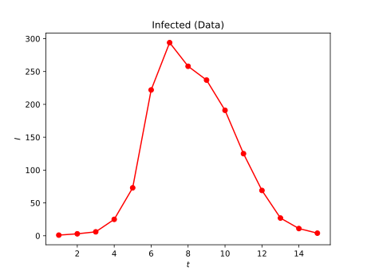
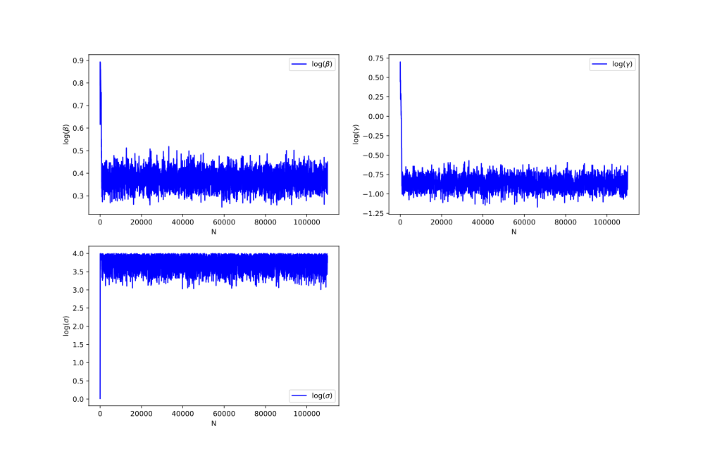
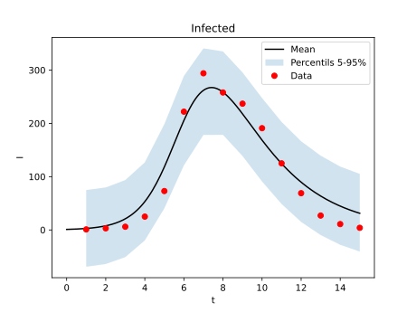
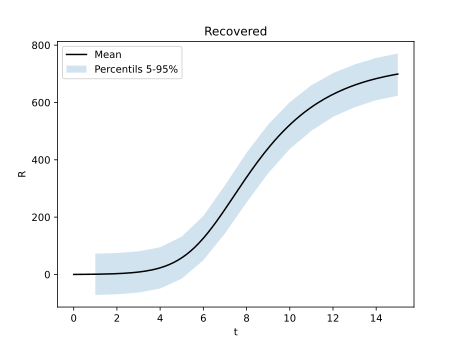
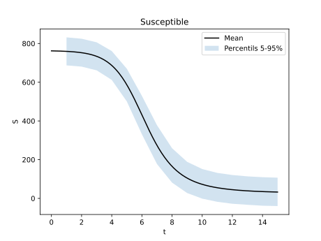

SIR
SIR epidemiological model
The SIR model is a classic example in biomathematics, used in the modelling of epidemies. This model was proposed by Kendall [4] and it has been a classic in mathematical modelling (see e.g., [1]), and it consists in a system of ODEs given by the next equations: $$ \begin{align*} \frac{dS}{dt} &= -\frac{\beta}{N} IS, \\ \frac{dI}{dt} &= \frac{\beta}{N} IS - \gamma I, \\ \frac{dR}{dt} &= \gamma I, \end{align*} $$ where \(S\) is the number of susceptible people, \(I\) is the number of infected people and \(R\) the number of recovered people. Here the this number of people comes from a total population \(N\). As a consequence, the variables follow the relation \(S(t) + I(t) + R(t) = N\). This model takes as a main assumption that for a high population, the variables are almost continuous.
The model depends of two parameters \(\beta\) and \(\gamma\) which are essential for simulate the model, and usually unknown. Then, the future predictions depend of an inversion process for estimate those parameters. Is here, when Bayesian paradigm can be used for this task. In general the data is the number of sick people \(I(t_k)\) at fixed times \(\lbrace t_{k} \rbrace_{k=1}^{N_{I}} \) (and sometimes also \(R(t_{k})\)). Is here when Bayesian inversion enters in action.
Study case
In general, the study of this problem via Bayesian inversion is not new, and it has been explored in different contexts (see e.g., [5,6,8,10]). Here, we will not do anything new. We will solve a problem proposing a a prior distribution for each parameter and estimating a sample with MCMC (Random Walk). For this purpose, we use real data extracted from the British Medical Journal [2], where, in the Epidemiology section, a case of influenza in a boarding school is presented. The data consist of the number of infected individuals recorded each day during a monitoring period of 15 days. These data are presented and plotted in the following table and figure.
$$ \begin{array}{c|ccccccccccccccc} t & 1 & 2 & 3 & 4 & 5 & 6 & 7 & 8 & 9 & 10 & 11 & 12 & 13 & 14 & 15 \\ \hline y & 1 & 3 & 6 & 25 & 73 & 222 & 294 & 258 & 237 & 191 & 125 & 69 & 27 & 11 & 4 \end{array} $$

This problem has been used as a Benchmark in different studies (see e.g., [1]), and also reviewed in Bayesian context (see e.g., [3,9]). Where the estimation of parameters \(\beta\) and \(\gamma\) are essential for forecasting and the uncertainty quantification of the system. Let us remark that the noise level \(\sigma\) is also unknown. For this reason, we need to estimate this parameter. One way to do it is include it in the Bayesian inversion as follows: $$ \theta = (\beta,\gamma,\sigma). $$
As a prior information, we know that all the parameters are positive. But we do not know (in principle) how fast the scale of the parameters can change. Then, we propose a log-normal distribution for the parameters, i.e., $$ \hat{\theta}_{k} := \log(\theta_{k}) \sim \mathcal{N}(m_{k},\sigma_{k}^{2}), $$ and the likelihood follows the proportionality relation $$ \begin{split} \pi(\hat{\theta}_{1},\hat{\theta}_{2},\hat{\theta}_{3}\mid y) &\propto \pi(\hat{\theta}\mid y)\pi_{0}(\hat{\theta}_{1})\pi_{0}(\hat{\theta}_{2})\pi_{0}(\hat{\theta}_{3}) \\ &\propto \exp\left(-\frac{\Vert \mathcal{G}(\exp(\hat{\theta}_1),\exp(\hat{\theta}_2)) - y \Vert_{2}^{2}}{2\exp(\hat{\theta}_3)^{2}} - \frac{\Vert \hat{\theta}_1 - m_{1}\Vert_{2}^{2}}{2\sigma_{1}^{2}} - \frac{\Vert \hat{\theta}_2 - m_{2}\Vert_{2}^{2}}{2\sigma_{2}^{2}} - \frac{\Vert \hat{\theta}_3 - m_{3}\Vert_{2}^{2}}{2\sigma_{3}^{2}} \right)/\exp(\theta_{3}). \end{split} $$ Here we selected the prior hyper-parameters as \(m_1 = m_2 = -1\), \(m_3 = 0\) and the standard deviations as \(\sigma_1 = \sigma_2 = \sigma_3 = 1\). In the case of the covariance matrix of the Random-Walk, we choose \(\Gamma_{RW} = \mathrm{diag}(0.1^{2},0.1^{2},1)\). The total number of samples for the MCMC simulation is 110000.
Results
Once the MCMC method runned, we can can see in the next figure how the traces rapidly converge to the posterior distribution. Here we have a small burn-in effect, for that reason, we have decided to truncate the first 10000 samples of the ensemble.

Then the final ensemble has a size of 100000 samples, and the histograms are presented in the next figure.

Let us notice how histograms of the parameters \(\beta\) and \(\gamma\) are centered, but the standard deviation of the noise is biased. At the same time, graphically we can see few uncertainty on the first two parameters, while in the third one the uncertainty looks considerable higher. In order to quantify the uncertainty we have estimated the mean and the standard deviation of all the parameters. They are showed in the next table
$$ \begin{array}{l|ccc} & \beta & \gamma & \sigma \\ \hline \text{Mean} & 1.45710447 & 0.42829189 & 43.32001146 \\ \text{Standard deviation} & 0.07247109 & 0.07109067 & 7.04792307 \\ \end{array} $$
where we can corroborate a high a uncertainty in the third parameter.
Additionally, with all the resultant evaluations \(\lbrace \mathcal{G}(\theta_{k})\rbrace_{k=1}^{100000}\) of the MCMC process, we have estimated the percentils until 95% of the model evaluations. These results are presented in the next figures.



Let us notice how the predicted model constructed with the mean values fixes nicely the data. Moreover, the data is inside the percentile envelopes. This means that the model is good calibrated. On the other hand, we can see a clasical behaviour for the variables \(R\) and \(S\). Nevertheless, we do not have clear data in the mentioned medical journal to corroborate this behaviour.
Conclusion
In general we can conclude that SIR model is good as a first approach for modelling an epidemiological phenomena. However, nowadays there exist more sophisticated models (see e.g. [7]).
Code
Github
Bibliography
[1] Diekmann, O., & Heesterbeek, J. A. P. (2000). Mathematical epidemiology of infectious diseases: model building, analysis and interpretation (Vol. 5). John Wiley & Sons.
[2] Influenza in a boarding school, 1978 Influenza in a boarding school. British Medical Journal 1978;4:587, 4 March 1978.
[3] Kalachev, L., Landguth, E. L., & Graham, J. (2023). Revisiting classical SIR modelling in light of the COVID-19 pandemic. Infectious Disease Modelling, 8(1), 72-83.
[4] Kendall, D. G. (1956, January). Deterministic and stochastic epidemics in closed populations. In Proceedings of the third Berkeley symposium on mathematical statistics and probability (Vol. 4, pp. 149-165). Berkeley, CA, USA: University of California Press.
[5] Kypraios, T. (2007). Efficient Bayesian inference for partially observed stochastic epidemics and a new class of semi-parametric time series models. Lancaster University (United Kingdom).
[6] Kypraios, T., Neal, P., & Prangle, D. (2017). A tutorial introduction to Bayesian inference for stochastic epidemic models using Approximate Bayesian Computation. Mathematical biosciences, 287, 42-53.
[7] Martcheva, M. (2015). An introduction to mathematical epidemiology (Vol. 61, pp. 9-31). New York: Springer.
[8] O'Neill, P. D. (2002). A tutorial introduction to Bayesian inference for stochastic epidemic models using Markov chain Monte Carlo methods. Mathematical biosciences, 180(1-2), 103-114.
[9] Raissi, M., Ramezani, N., & Seshaiyer, P. (2019). On parameter estimation approaches for predicting disease transmission through optimization, deep learning and statistical inference methods. Letters in biomathematics, 6(2), 1-26.
[10] Solonen, A., Haario, H., Tchuenche, J. M., & Rwezaura, H. (2013). Studying the identifiability of epidemiological models using MCMC. International Journal of Biomathematics, 6(02), 1350008.